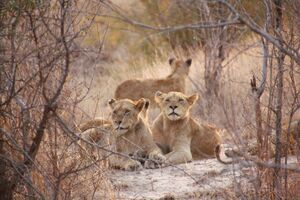
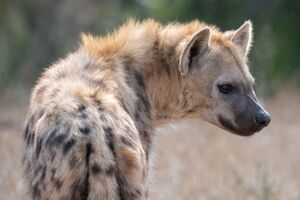
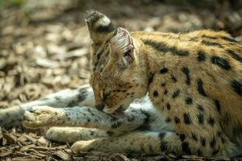
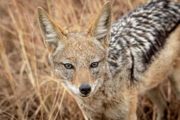
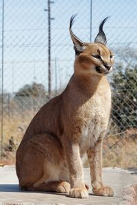
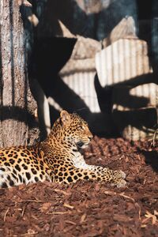

Wildlife Gallery
Capturing the beauty and intensity of life in the wild savanna.






Featured Video
Watch the cheetah in motion as it showcases the speed and elegance that define Africa's fastest predator.
With every stride, the cheetah demonstrates the focus, precision, and athleticism that make it one of the savanna's most remarkable predators.